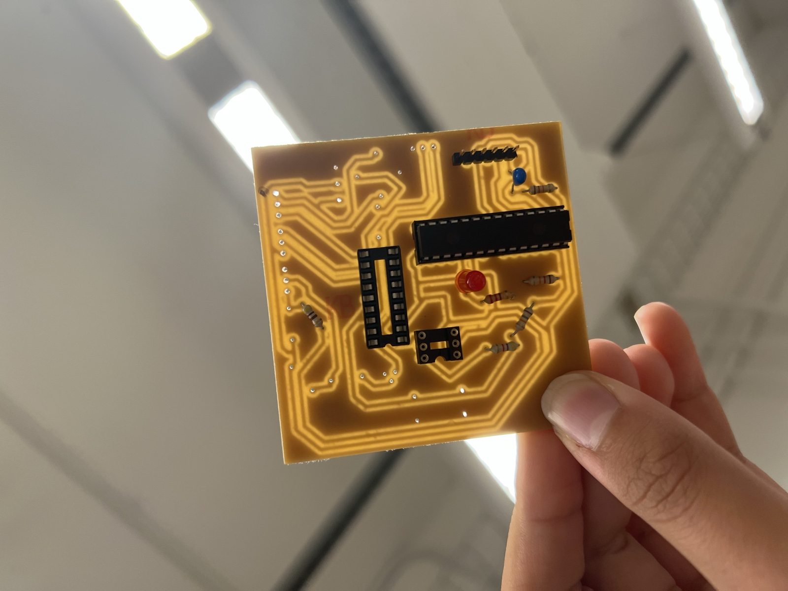
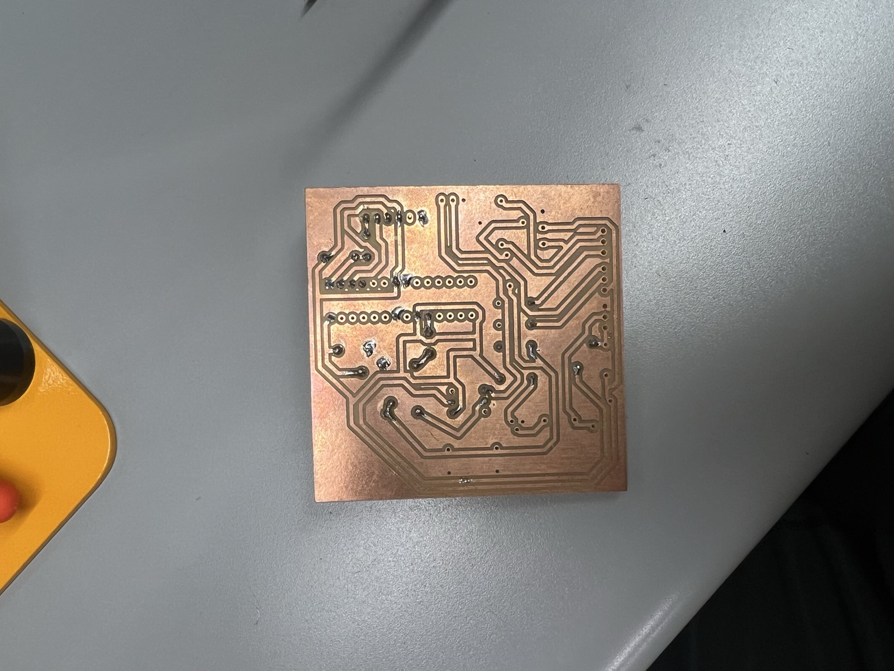
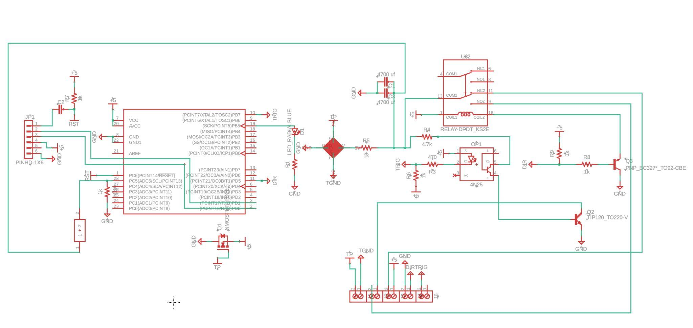
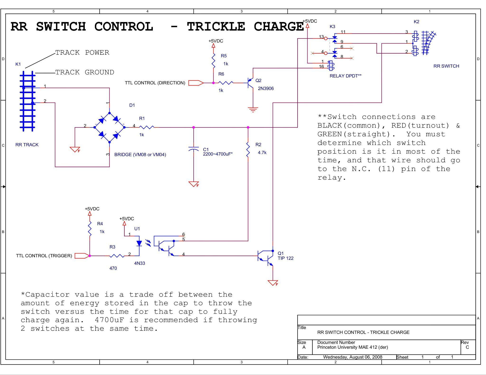
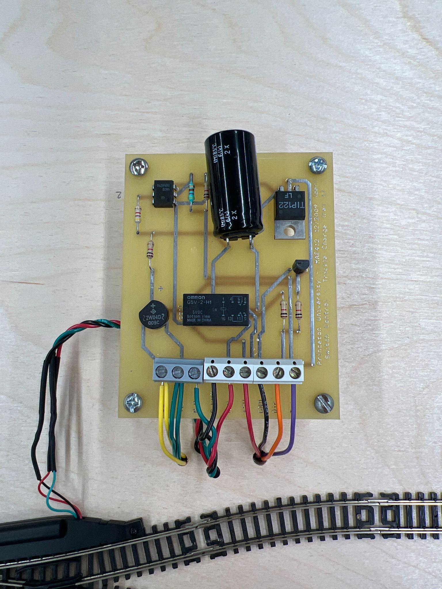

Flight Controls & Princeton LLP
Custom 3D-printed flight simulator yoke with multi-axis centering springs and a 4-section throttle quadrant—all wired to individual potentiometers—alongside my Princeton University internship redesigning the MAE 412 DCC railroad track switch thrower PCB with an onboard ATmega328P and dual trickle-charged capacitors.
Modernizing the DCC Railroad Track Switch Thrower
Part of Princeton University’s engineering curriculum (MAE 412: Microprocessors and Their Applications) uses automated model train sets as the platform for students to design and test microprocessor control systems. With the original DCC railroad track switch thrower with a trickle-charged capacitor being ~20 years old, I analyzed the legacy schematic and designed, sourced, and hand-soldered a modernized single-sided PCB featuring an onboard ATMEGA-328P microprocessor and two 4700µF capacitors.
Engineering Analysis & Single-Sided PCB Redesign

My newly fabricated single-sided DCC RR switch thrower PCB held up to the lab lights, showing the 28-pin ATmega328P chip, DPDT relay socket, 4N25 optocoupler socket, status LED, resistors, 6-pin header, and single-sided copper routing.

Underside of the new single-sided copper-clad board showing the complex single-layer trace routing and hand-soldered through-hole pads completed in the Princeton lab.

My redesigned schematic integrating the 28-pin ATmega328P, dual 4700µF trickle-charged capacitors (C1 & C3), KS2E DPDT relay, 4N25 optocoupler, BC327 PNP, and TIP120 transistor.

The original Princeton MAE 412 schematic (Rev C, Aug 2008) using track power, a bridge rectifier, a single capacitor (~12s charge time), 4N33 optocoupler, and external TTL control lines.

The ~20-year-old double-sided Princeton MAE 412 board with a single large electrolytic capacitor, Omron G5V-2-H1 relay, and TIP122 wired to a model railroad turnout.